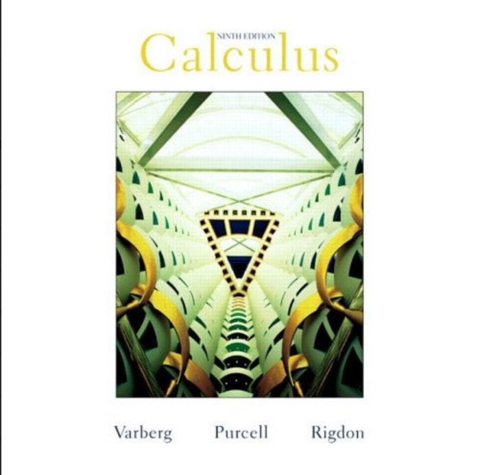

Koleksi Buku Digital
Temukan buku digital terbaru dan terpopuler dari berbagai disiplin ilmu

Buku Python
Panduan lengkap untuk mempelajari bahasa pemrograman Python dari dasar hingga tingkat lanjut.
Baca Sekarang
Matematika dasar
Pengantar dasar matematika untuk pemula yang ingin memahami prinsip-prinsip matematika.
Baca Sekarang

Laut Bercerita
Laut Bercerita, novel terbaru Leila S. Chudori, bertutur tentang kisah keluarga yang kehilangan, sekumpulan sahabat yang merasakan kekosongan di dada, sekelompok orang yang gemar menyiksa dan lancar berkhianat, sejumlah keluarga yang mencari kejelasan makam anaknya, dan tentang cinta yang tak akan luntur.
Baca Sekarang
